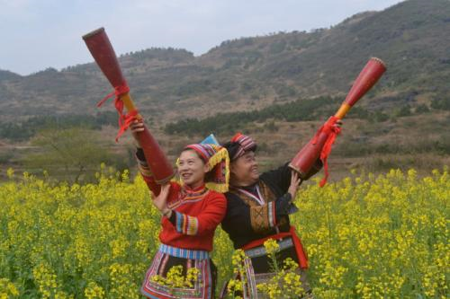

瑶族赶鸟节

瑶族多在山上居住（有所谓“无山不瑶”之说）。中国南方山上树木繁茂，鸟类群聚，因此，瑶民与鸟关系密切，感情深厚。所以，瑶山传承着与鸟有关的风俗和传说就比较多。以前的农历二月初一，繁忙的春耕还未开始。这一天，江华瑶族民众穿上本民族的节日盛装，愉快地开展喂鸟、比鸟、歌鸟等活动，欢度敬鸟节。他们一方面祝福鸟类快乐、繁衍；另一方面也学习鸟类自由的生活。清晨，瑶胞像汉族过年那样兴高采烈，大人小孩全忙开了，把自家做的圆糍粑一个个地插在房屋的四方和田土的四角，心里不停地默念着传统的“祝词”：
鸟神王，鸟神王，
你的生日我不忘。
吃饱吃好耍个够，
为我农夫大帮忙。
“祝词”朴素地表现了瑶山民众对鸟的特殊情感。敬祭完毕，瑶民一家才坐在堂屋里火塘边,欢欢喜喜地吃糯米粑粑。早饭以后,男女老少成群结队，高高兴兴地去赶“鸟会”。风雨无阻，十分热闹。